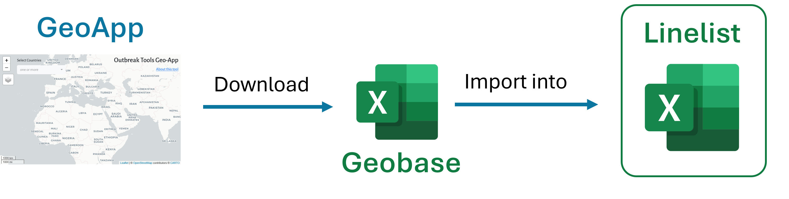

Getting started with the linelist
OutbreakTools (OBT) linelist are linelist created using the OBT solution. They always have the same functionalities, which include:
- Possibility to upload pre-formatted geobases to standardise geographical information
- Basic analyses (uni and bivariate tables, epicurves, top x locations with the most cases etc.)
- Data and analyses export (anonymous or not)
- Possibility to show or hide optional variables
- Possibility to migrate data to a newer version of the linelist
- …
Steps to prepare a linelist for deployment
Download the empty linelist template in the language of your choice.1
Prepare geographic information:
- Go to the Geoapp and download the geo-base for the area of interest (it can be cross-border).
- In the linelist, go to the OutbreakTools menu and click on the “Import geobase” button
- Go to the Geoapp and download the geo-base for the area of interest (it can be cross-border).

Set up the day of the week: “Week start” button in the OutbreakTools menu
Optional: modify variable visibility: “Show/Hide variables” button from the OutbreakTools menu
Optional: prepare and print a register and/or Case Report Form to enter data on paper (“Register and Case report form” section of the OutbreakTools menu)
Send the linelist to the sites. There should be one linelist per site.
Each site should fill the Info sheet in their linelist before entering patient data.
After data has been encoded in the linelist, you can export data and send it to Epicentre for visualisation on an dashboard if the corresponding dashboards exist (which is usually the case for intersection approved linelists).
Current dashboards include: cholera, measles, hepatitis E, diphtheria, mpox, meningitis. Other are added as the list of available OutbreakTools linelists grow.
Working with the file
Save the file locally
OneDrive cannot live synchronise macro-enable Excel files while you are using them2. If OneDrive is causing syncrhonisation issues, turn if off for a while or save the file is a folder nor syncrhonised by OneDrive.
Use the Excel Desktop version
Most of the functionalities of the linelist are not supported by the internet Excel version.
The OutbreakTools ribbon
Most of the important features of the linelist can be accessed through the OutbreakTools Menu at the top of Excel interface. Go and explore it!
Structure of the file
At minima, an OutbreakTools linelist will contain these sheets:
An Info sheet which contains metadata about the project
At least one data entry sheet to enter patient data
Some or all of the following analyses sheets containing basic exploration of data:
- Uni and bivariate analyses
- Temporal analyses (epicurves and their associated tables)
- Spatial analyses (top X locations of cases)
- Spatio-temporal analyses (epicurves for chosen locations)
A Custom dropdown sheet where the user can define categories for some specific variables
A Custom tables sheet where the user can create a pivot table of the data
A Geo sheet showing the loaded geobase.
Enter data for locations
Geographical location are encoded using four columns that can accommodate up to four administrative levels, and these columns have a special status in OutbreakTools linelists. You can recognise them by the orange background of their labels.
When you import a geobase in a linelist:
- The labels of the columns are updated with the administrative levels present in the geobase (e.g. “adm1_name” will change to “Province” for DRC).
- The categories of the dropdown menus update.
You can fill the variables either by using the cascading dropdown menus, or by using the GeoHelper button from the OutbreakTools menu.
The first tab of the GeoHelper popup window allows you to pick the location level after level; the second tab allows you to search for a name in the geobase and the third tab displays the past values previously picked in the GeoHelper.
Fill dropdown menus for Custom Dropdowns variables
Custom dropdowns columns are categorical columns for which the dropdown menu categories are defined by the user. They are useful for variables that rely on local, field specific information.
To define categories:
Click on the column label to go to the Custom dropdown sheet where you can define the content of the dropdown menu4.
Enter categories in the table
Click on the head of the table to be brought back to the corresponding column in the linelist sheet to enter data5
Extra columns
OBT linelists often come with “extra columns” at the end (which may be show or hidden by default, go to the Show/hide variable popup to see them). The user can change the label of the columns and use them to collect whichever information they wish.
Usually, a couple of free text/numeric and a couple of custom dropdown menus are available.
Decide which additional variable you wish to collect
Rename the variable (select the label cell and write the new label)
Optional: define the categories for the dropdown menu (see Section 6)
Fill in data
Footnotes
you can expect English and French as default, but Spanish, Portuguese or Arabic translations have been developed when needed, don’t hesitate to ask.↩︎
One drive does syncrhornise the file once you saved and closed it though↩︎
This is distinct from the password protection that is customs for linelists: sometimes when a file comes from the internet through mail or Teams, Windows applies an extra layer of blocking↩︎
You can also navigate to that sheet using the bottom tabs, as you would do any other sheet↩︎
Again, this is a shortcut but you could go back using normal sheet navigation↩︎